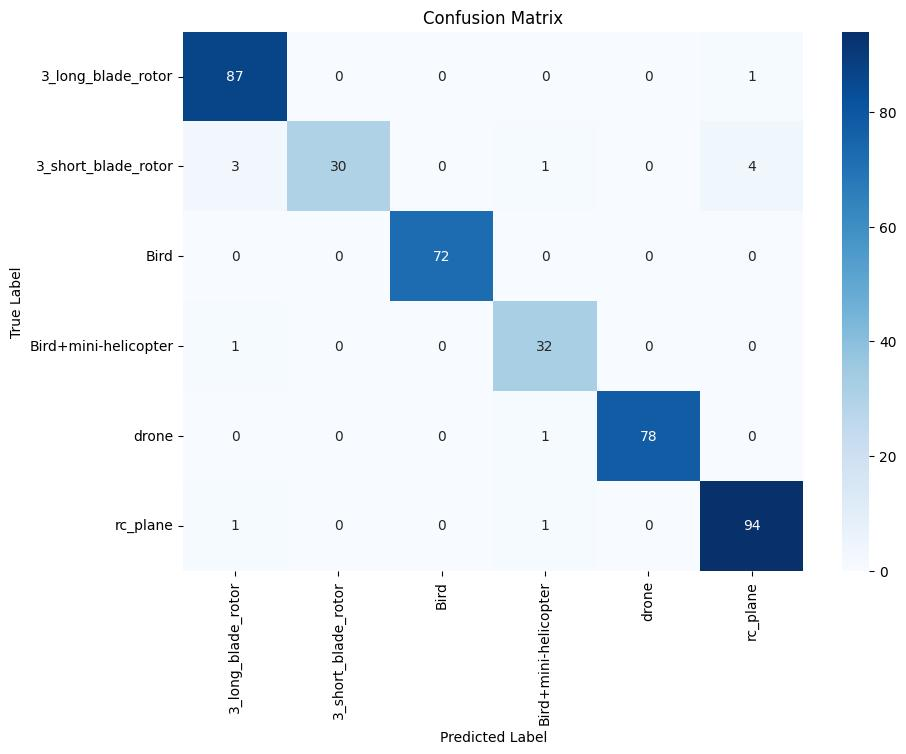
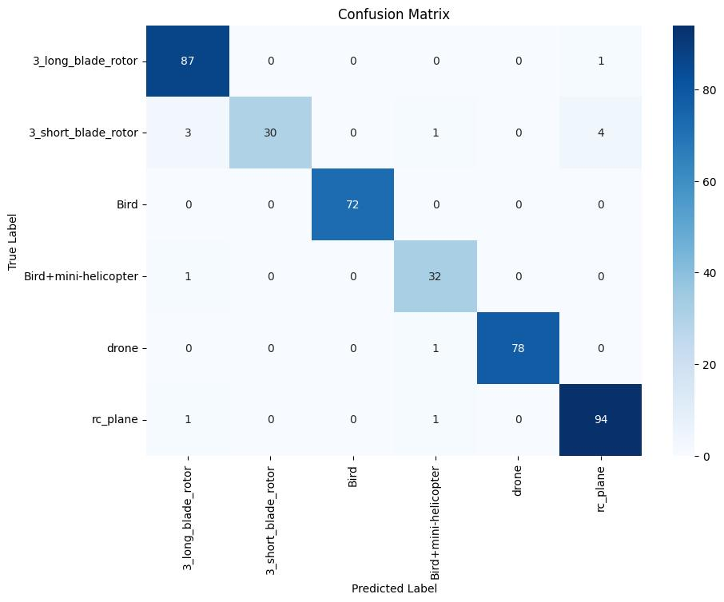

The modern world demands heightened attention to safety and security, particularly in tasks like search and rescue operations, surveillance, and the protection of critical infrastructure. These operations are often labor-intensive and hazardous, highlighting the need for systems that enhance situational awareness.
Micro-Doppler Classification
About the Project
Introduction
The Challenge
Unmanned Aerial Vehicles (UAVs), commonly known as drones, pose a significant threat to privacy and security due to their increasing affordability and potential misuse. The challenge lies in accurately classifying different drone models and distinguishing them from similar objects, such as birds.
Background
Both drones and birds exhibit unique micro-Doppler signatures—modulations in the Doppler effect caused by moving parts like propeller blades or wing beats. These signatures can be analyzed to differentiate between drones and birds, aiding in more effective airspace monitoring and security enforcement.
Detailed Description
Our project focuses on the classification of drones and non-drones using micro-Doppler signatures captured from radar sensors. Moving components of drones, such as rotating blades, generate distinct frequency modulations that can be analyzed through Joint Time-Frequency Analysis. This method provides crucial insights beyond the traditional radar cross-section (RCS) data, which may not be sufficient for reliable drone detection.
Expected Solution
By processing the micro-Doppler signatures of objects detected in the airspace, our system will output the class of the object, identifying whether it is a drone or a bird. This classification is essential for enhancing the reliability of drone detection systems and ensuring the safety of sensitive areas.
Proposed Solution
Our solution utilizes the Tiny VGG architecture, trained with PyTorch,
to efficiently classify micro-Doppler signatures of drones and birds.
The model is deployed as a Streamlit-based web application, providing a user-friendly interface
for security personnel. This approach addresses the problem by enabling quick and accurate
identification of potential drone threats, ensuring a reliable and accessible tool for enhanced security.
Output Screenshots
 
